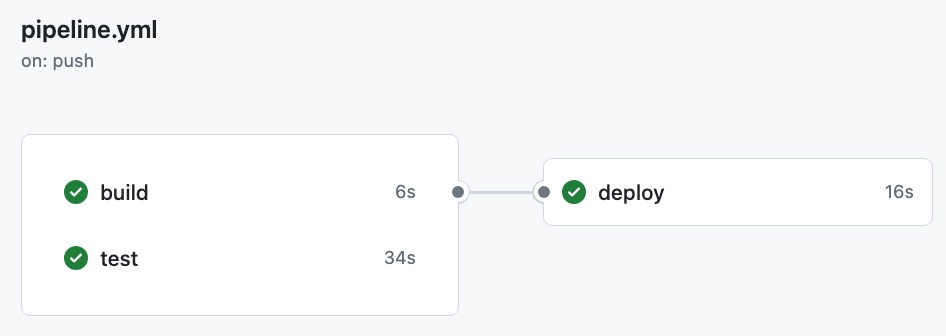

Publishing (Content Delivery)
A Hugo site is published by copying it (deploying it) to any web server which then makes it available to the readers (via the http protocol, the delivery). A web server is a machine running http server software like Apache or NGINX.The deployment can be automated using Continuous Deployment practices.
Deployment
The diagram below, introduced on the Content Creation and Delivery Processes page, shows the content creation process done with hugo and the content delivery process based on the generated web site as independent processes. They are in fact technologically independent stacks.
The only link between them is the deployment of the generated site on the web server’s file system, which can be done with any means, manual or automated, to copy a file from one computer to another.
flowchart TB
subgraph ssg["Static Site Generator"]
direction LR
subgraph cc["content creation"]
ed1((Editor))
content[/"Site Content (Markdown)"/]
structure[/"Site Structure (HTML, CSS, JS)"/]
hugo["`
**HUGO**
⚙️ `"]
website[/"Complete Website with Content
(HTML, CSS, JS)"/]
content & structure --> hugo
hugo --> website
ed1 --> content
ed1 --> structure
end
website==>|DEPLOYMENT|pages
subgraph cd["content delivery"]
subgraph Client["Client Side"]
re1((Reader))
re2((Reader))
browser2
browser3
end
subgraph Server["Server Side"]
subgraph webserver["Webserver"]
httpd["`
**httpd**
(nginx, apache)
`"]
httpd -..->pages
pages[/"Complete Website with Content
(HTML, CSS, JS)"/]
end
end
re1 --> browser2["Browser"]
re2 --> browser3["Browser"]
browser2 <-..->|http/HTML| httpd
browser3 <-..->|http/HTML| httpd
end
end
Deployment Pipeline
The examples and theme tryouts on this page are all automatically build and deployed with Github Actions. The Workflow definition files can be found in the repos in
the .github/workflows folders. Most of these workflows are quite simple, they combine the hugo site generation (build step) with the deployment to gh pages (deployment step) in one github action job. They also do not contain explicit tests. However, they would fail (and stop the pipeline) if the hugo build fails.
The hugo-bare-bones example contains a more complete pipeline with separate jobs for the build, test and deploy stages: https://github.com/about-hugo/hugo-bare-bones/actions/workflows/pipeline.yml
This workflow is split into three jobs, as github actions only shows these as separate build pipeline steps:
 Build Pipeline in Github Actions Visualization
Hugo Deployment Pipeline
The pipeline consists of the following steps:
-
git push: the editor performs a git push
-
GitHub Actions starts the gh action workflow:
- build: the hugo site is build on gh. (after checkout, installation of necessary software)
- test: automated tests are executed
- deploy: the generated site is deployed to the server
flowchart TD
subgraph cc["deployment pipeline"]
direction LR
ed1((Editor))
subgraph hsou["Local Computer"]
content[/"Site Content (Markdown)"/]
structure[/"Site Structure (HTML, CSS, JS)"/]
push{{git push}}
end
content-->push-->content2
structure-->push-->structure2
subgraph ghhs2["deploy pipeline auf github - gh action"]
direction LR
subgraph build["build step"]
subgraph ghhs["repo on gh (origin)"]
content2[/"Site Content (Markdown)"/]
structure2[/"Site Structure (HTML, CSS, JS)"/]
end
hugo{{"`
**HUGO**
⚙️ `"}}
website[/"Generated Website"/]
end
subgraph deploystep["deploy step"]
deploy{{deployment}}
end
end
website-->deploy-->website2
subgraph httpd["Web Server"]
website2[/"Generated Website"/]
end
content2 & structure2 --> hugo
hugo --> website
ed1 -->|edit|content
ed1 -->|edit|structure
re1((Reader))
re2((Reader))
re3((Reader))
website2 --> re1 & re2 & re3
end
Notes on the Pipeline Steps
1. git push: the editor performs a git push
As with software development, the source code of the hugo web site is shared via a central git repository. Automated Build- and Test Runs are triggered by changes to the repository. These can be configured. The example sites perform a build for every push, and the deployment only for every push on the main branch.
Generated Files – like the generated site – are usually not included in the source code repository. This would be redundant; also, rebuilding the site constitutes a test that the build works in a reproducible way.
2. GitHub Actions starts the gh action workflow:
Via the on: push directive in the examples.
3. build: the hugo site is build on gh.
after checkout, installation of necessary software - This does constitute a test. (see above)
4. test: automated tests are executed
Hugo web sites could be tested automatically by checking for failing links, checking the validity of HTML, running automated accessibility checks and much more. The hugo-bare-bones contains an example how the site can be tested using Cypress, which allows for full end2end testing of the website. Cypress could even be used to test wether all mermaid diagrams could be rendered on the site (they are rendered by javascript in the browser)
5. deploy: the generated site is deployed to the server
The actual deployment depends on the target server. The Showtime Website (production) is copied as via ssh to the virtual machine running nginx. For a deployment on github pages, the generated site is pushed to the gh-pages branch.
Notes on Terminology
Within the dev/ops community, the terms Continuous Integration, Delivery and Deployment have a specific meaning. Martin Fowler defines Continuous Integration as “a software development practice where each member of a team merges their changes into a codebase together with their colleagues changes at least daily” (Fowler 2024). Continuous Integration usually includes an automated build and test run by a build server attached to the version management server.
Continuous Delivery is the extension of Continuous Integration as it includes building the whole system and deploying it - automatically - in a staging or test environment, making it possible to run end-to-end acceptance tests.
With an automated system build and deployment, deployment to production can be done automatically too (after earlier steps in the deployment pipeline, especially the tests ran successfully!) - this would be Continuous Deployment.
While creating content for hugo web sites is not software development per se, the practices and tools, especially git and automation knowledge that is needed for continuous integration can be teached, learned and practiced using a hugo site.
References
(Fowler 2024): Fowler, Martin: Continuous Integration. Bliki-Article, 18.1.2024, https://martinfowler.com/articles/continuousIntegration.html , accessed 11.5.2024
(Fowler 2013a): Fowler, Martin: Deployment Pipeline, Bliki-Article, 30.5.2013, https://martinfowler.com/bliki/DeploymentPipeline.html , accessed 11.5.2024
(Fowler 2013b):Continuous Delivery, Bliki-Article, 30 May 2013, https://martinfowler.com/bliki/ContinuousDelivery.html , accessed 11.5.2024
(Atlassian/Pittet o.D) Pittet, Sten: Continuous integration vs. delivery vs. deployment. Atlassian w/o date, technical documentation. https://www.atlassian.com/continuous-delivery/principles/continuous-integration-vs-delivery-vs-deployment, accessed 11.5.2024
Audio: Hanselminutes Podcast 2 Oct 2012: Continuous Delivery with Jez Humble and Martin Fowler, accessed 11.5.2024